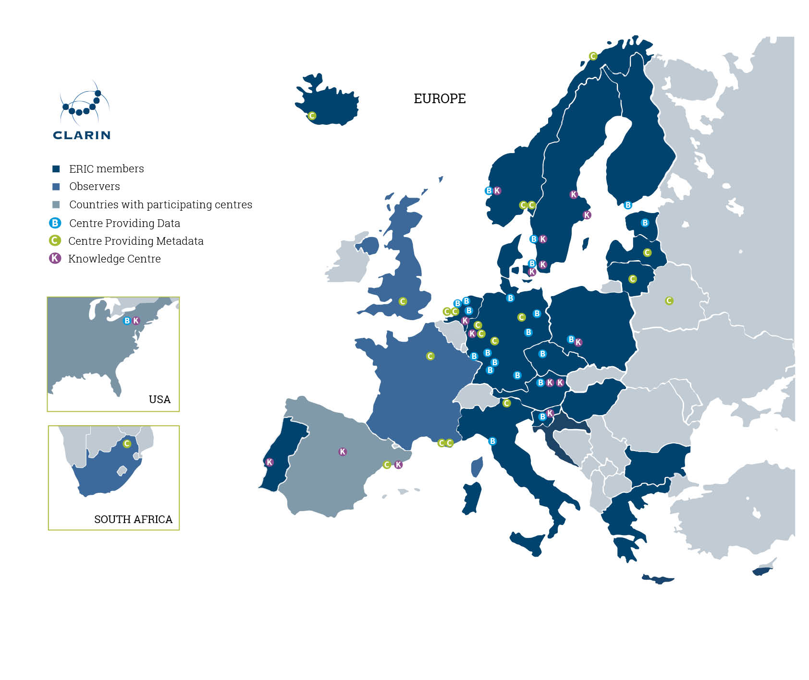

The increased application of data-driven approaches has been a game changer in the Humanities. By using large quantities of research data and various tools to process and analyse these data, Digital Humanities scholars can address questions that were previously considered too complicated or time-consuming to answer. But the development of the DH field has also reshaped the needs of researchers. DH scholars desire increasingly larger, sufficiently annotated sets of research data and advanced tools to process them. This abstract introduces a number of services offered by CLARIN, the Common Language Resources and Technology Infrastructure, that are particularly interesting for the DH community.
As a European Research Infrastructure Consortium (ERIC) established by the European Strategy Forum on Research Infrastructures (ESFRI), CLARIN is a non-commercial Research Infrastructure providing single sign-on access to natural language resources and tools free of charge for all academic researchers.[1] Countries or regions can join CLARIN as member, observer, or third party. As of June 2020, the CLARIN consortium consists of 21 full members, three observers, and a third party, covering a total of 25 participating countries (figure 1). Within each national consortium a number of institutes (universities, academies, research institutes, museums, archives, etc.) contribute resources, tools, and knowledge to the CLARIN infrastructure.
Figure 1: This map shows countries and regions participating in CLARIN as member, observer, or third party, and various types of CLARIN centres.
CLARIN aims to cater the needs of the entire DH community. Clearly, these needs differ widely. Some DH researchers, for example, like to collect, curate, and deposit their own data sets and to develop their own tools, while others prefer to focus on solving a piece of the puzzle of the various aspects of human society and culture, leaving the technical development to others. Surely, there is no such thing a one-size-fits-all solution to cater to the needs of all different types of DH researchers. However, a number of developments would benefit the DH community at large. For instance, making resources and tools as sustainable, openly available, interoperable, and easily findable as possible. From the outset, it has been CLARIN’s strategy to make its resources and tools available according to the later defined FAIR data principles: Findable, Accessible, Interoperable, and Reusable.[2]
CLARIN is a distributed infrastructure. Researchers can deposit their resources in one of the certified CLARIN centres offering open repositories, each devoted to a specific research field. The metadata of each deposit gets automatically harvested by the Virtual Language Observatory (VLO, https://vlo.clarin.eu/), a faceted search engine allowing everyone to find resources deposited in all of the CLARIN repositories.[3] Currently, the VLO gives access to over 900,000 records. Once a relevant resource has been found it can be immediately processed by a number of analytical tools for part-of-speech tagging, distant reading, topic modelling, named entity recognition, machine translation, and various other tasks using the CLARIN Language Resource Switchboard (http://switchboard.clarin.eu/). The Switchboard takes into account features like modality, format, and language to match resources to tools.[4]
In addition to a full inventory of all resources made available through the various CLARIN repositories, CLARIN also provides user-friendly overviews of key resources. These overviews of CLARIN Resource Families (https://www.clarin.eu/resource-families) provide information on the availability, language, size, annotation, and license of the resources. Currently, ten corpora families, five families of lexical resources, and three tool families are offered. The corpora families include parliamentary corpora, newspaper corpora, literary corpora, spoken corpora, and computer-mediated communication corpora (e.g. social media posts). The overviews are initiated based on the input of domain experts across the world and continue to be manually curated.[5]
But CLARIN offers more than just data and tools. Knowledge is a key component of the CLARIN infrastructure. A coordinated system of Knowledge centres provides knowledge and expertise to researchers. Each Knowledge centre has its own specific area of expertise, such as data management, language learning analysis, speech analysis, treebanking, and several languages.[6] Several funding instruments allow researchers, teachers, and developers to collaborate and to teach each other, stimulating cross-country and cross-disciplinary collaboration.[7] Dozens of recorded presentations, tutorials, discussions, and other videos have been made available on VideoLectures.NET (http://videolectures.net/clarin/).
Researchers, teachers, developers, citizen-scientists, policy makers, politicians, journalists, and other people interested in getting to know more about CLARIN are invited to have a look at the CLARIN Value Proposition (https://www.clarin.eu/value-proposition). Those who would like to know what is going on in their national CLARIN consortium can have a look at the list of participating consortia (https://www.clarin.eu/content/participating-consortia) or at the Tour de CLARIN webpage (https://www.clarin.eu/Tour-de-CLARIN), an ongoing initiative to highlight the activities in national consortia and Knowledge centres.
References
1. Erhard Hinrichs and Steven Krauwer, The CLARIN Research Infrastructure: Resources and Tools for e-Humanities Scholars. Proceedings of the Ninth International Conference on Language Resources and Evaluation (LREC 2014), pp. 1525-1531. Handle: http://dspace.library.uu.nl/handle/1874/307981; Sheena Bassett, Leon Wessels, Steven Krauwer, Bente Maegaard, Hella Hollander, Femmy Admiraal, Laurent Romary, and Frank Uiterwaal, Connecting the Humanities through Research Infrastructures. Proceedings of the Digital Humanities in the Nordic Countries 4th Conference (DHN 2019). URL: https://hal.inria.fr/hal-02047512/document; Franciska de Jong, CLARIN – Infrastructural Support for Impact through the Study of Language as Social and Cultural Data. In: Bente Maegaard and Riccardo Pozzo eds., Stay Tuned to the Future. Impact of the Research Infrastructures for Social Sciences and Humanities, Leo S. Olschki Editore, 2019, pp. 121-129. URL: https://www.clarin.eu/sites/default/files/STAY_TUNED_TO_THE_FUTURE.pdf.
2. Franciska de Jong, Bente Maegaard, Koenraad De Smedt, Darja Fišer, and Dieter Van Uytvanck, CLARIN: Towards FAIR and Reponsible Data Science Using Language Resources. Proceedings of the Eleventh International Conference on Language Resources and Evaluation (LREC 2018), pp. 3259-3264. URL: http://www.lrec-conf.org/proceedings/lrec2018/pdf/575.pdf. Up-to-date information concerning CLARIN and FAIR Data can be found on: https://www.clarin.eu/fair.
3. Dieter Van Uytvanck, Herman Stehouwer, and Lari Lampen, Semantic metadata mapping in practice: The Virtual Language Observatory. Proceedings of the Eighth International Conference on Language Resources and Evaluation (LREC 2012), pp. 1029-1034. Handle: http://hdl.handle.net/11858/00-001M-0000-0014-744B-B; Twan Goosen and Thomas Eckart, Virtual Language Observatory 3.0: What’s New? Paper presented at the CLARIN Annual Conference 2014. URL: http://www.clarin.eu/sites/default/files/cac2014_submission_2_0.pdf. Up-to-date information concerning the Virtual Language Observatory can be found on: https://vlo.clarin.eu/help.
4. Claus Zinn, The CLARIN Language Resource Switchboard. Proceedings of the CLARIN Annual Conference 2016. URL: https://www.clarin.eu/sites/default/files/zinn-CLARIN2016_paper_26.pdf. Up-to-date information concerning the CLARIN Language Resource Switchboard can be found on: https://switchboard.clarin.eu/help.
5. Darja Fišer, Jakob Lenardi?, Tomaž Erjavec, CLARIN’s Key Resource Families. Proceedings of the Eleventh International Conference on Language Resources and Evaluation (LREC 2018), pp. 1320-1325. URL: http://www.lrec-conf.org/proceedings/lrec2018/pdf/829.pdf. Up-to-date information concerning the CLARIN Resource Families can be found on: https://www.clarin.eu/resource-families.
6. An overview of Knowledge centres can be found on: https://www.clarin.eu/content/knowledge-centres.
7. An overview of CLARIN’s funding instruments can be found on: https://www.clarin.eu/funding.